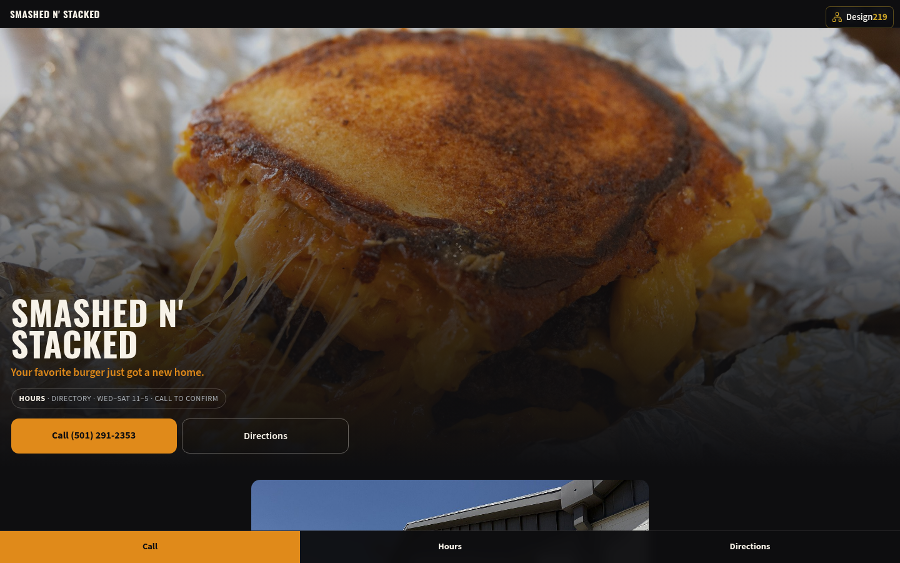
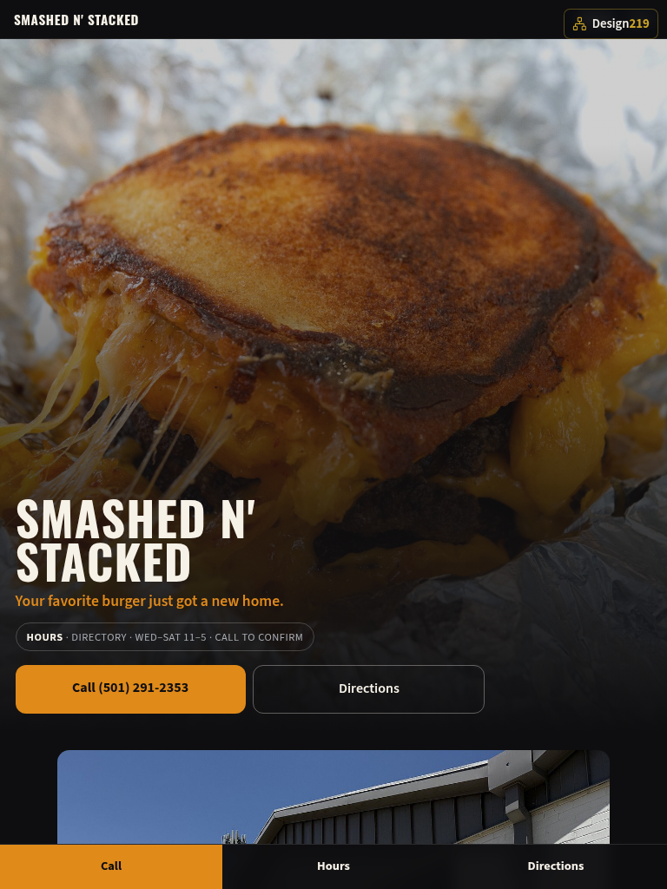
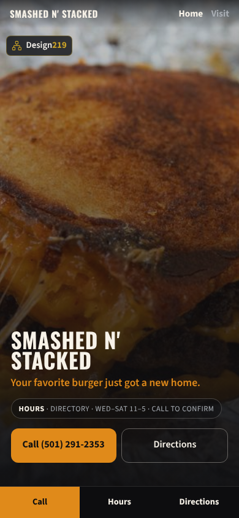
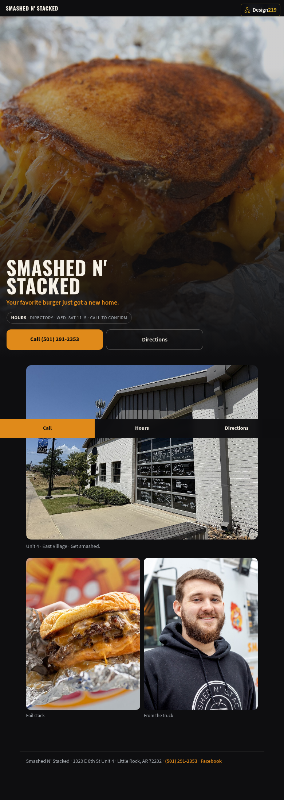
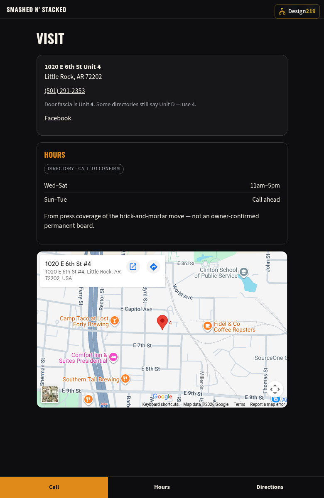

ATTN: James Mann · For the owner · Smashed N' Stacked · 1020 E 6th St Unit 4, Little Rock
Not a proposal, not a mock-up on a slide. The site is finished and working. This packet shows you what it looks like on every screen, what it does, how people will find it, how it works with your Facebook page, and where it could go from here. Nothing is owed and nothing is signed.
First · Who did this, and why
Your burgers already travel on Facebook. What was missing was a place on the internet that belongs to you.
When someone in Little Rock looks for Smashed N' Stacked today, they land on directory listings, Toast, or your Facebook page. The domain that carries your name does not load. None of that is an insult — it is what a busy shop looks like when the truck work and the door work come first.
I build websites and the software underneath them. On my own time I put together a finished look from photographs already on your public Facebook: the cheese-pull foil stack, the chalked Unit 4 garage door, the truck. Your name, your phone, directions to 1020 E 6th St Unit 4, and the line you already use — Your favorite burger just got a new home.
Everything in this packet already exists and works on a phone. Open the link or scan the code. If you like it, I put it on an address you own and point Google there. If you do not, you have lost nothing.
Open it on your phone
Deep link only — not the hub, not GitHub.
https://design219llc.github.io/outreach-looks/smashed-n-stacked/
01 · The front page
The first thing a visitor sees is the cheese-pull smash burger in foil — your own photograph — with the shop name over it and the three things they came for beside it: today's hours note, Call locked to (501) 291-2353, and Directions into maps for Unit 4. No menu dig. No scroll required for the essentials.

02 · Every screen
The same site rearranges itself for whatever it is opened on. Nothing is cut and nothing is buried behind a menu button — on all three, the hours note, the call button and directions sit on the first screen before anyone scrolls.


On a phone there is one extra touch: a bar pinned to the bottom of the screen with Call, Hours and Directions. It stays put the whole time someone is reading, so your phone number is never more than one thumb-reach away.
03 · What it does
Every Call button opens the dialer with (501) 291-2353 already in it. No copying, no typing.
Directions hands off to Google Maps or Apple Maps with the route set to 1020 E 6th St Unit 4, Little Rock.
Wed–Sat 11–5 sits on the first screen and is tagged DIRECTORY with a call-to-confirm note until you lock the board yourself.
Cheese-pull, hand-held stack, chalk door — real pictures from your shop, not stock burgers from somebody else's grill.
The Visit page says the fascia is Unit 4 and that some directories still say D — so a first-timer finds the right garage door.
Photographs are sized for the screen asking for them. A phone on a city signal never downloads the desktop-sized foil shot.
Screen readers work, every photograph is described, the text passes contrast, and the whole site can be operated from a keyboard.
No plugins to update, no software that expires, no login to forget. It sits there and works.
04 · Being found
A website is not only a page for people — it is also what Google reads when somebody near East Village types smash burger near me. This one was built to be read properly.
Your name, street address, phone number, and the fact that this is a restaurant are written into the page in the format search engines publish for local results — so hours and a call button can show in the listing once the site is live on an address you own.
Home and Visit each carry their own title and summary, so a search result reads like an invitation instead of a bare web address.
Pasted into Facebook or a text message, the link opens with a photograph and a proper description instead of a blue line.
Real headings in a sensible order, and a written description on every photograph. Good for search engines for the same reason it is good for a blind customer.
Google measures both and counts them. This is a light site built for a phone from the ground up, not a desktop page squeezed down.
An honest word about search. None of this is a magic switch. Results build over weeks, and for a local burger shop the single biggest factor is a claimed, filled-in Google Business Profile. The site makes that profile stronger and gives it somewhere to point — the two work together. Anyone who promises you the top spot is selling something.
05 · Site and social together
You rent your Facebook page. You would own your website. They do different jobs, and they are stronger pointed at each other.
Your Facebook page at facebook.com/smashednstacked is already doing the living work — plates, the truck, the move into Unit 4, the days people ask if you are open. The site does not try to replace that. It links straight to Facebook and leaves specials where they already land.
What Facebook cannot do is be found by someone who has never heard of you. Somebody driving through East Village looking for a smash burger does not start inside Facebook — they search Google, or they ask their phone out loud. A page inside a social network is largely invisible to that search. A website is exactly what it is looking for.
Specials, sold-out boards, a new stack, the crowd at the door. Things that change and want a comment section.
Hours note, address, phone, how to find Unit 4. The facts somebody needs at lunch with one hand on the wheel.
Search finds the site, the site sends them to Facebook and they follow you; your posts link back to the site, which lifts it in search. Each one feeds the other.
There is a practical safety net in it too. Pages get locked out, hacked, or caught by a rule change, and there is no phone number to call when it happens. If that ever happened to yours, everything a customer actually needs would still be sitting at your own address, untouched.
06 · The whole site
Scroll either of these to see the full page as it stands today. Home carries the foil hero, the chalk door, and the stack story. Visit carries the NAP, the DIRECTORY hours board, the Unit 4 note, and the map.


These are cropped to fit the screen. The site itself is easier to look at on a phone — open the live version and tap through it.
Same deep link on paper
Scan to open the unpublished site. Print this page and the code still works.
https://design219llc.github.io/outreach-looks/smashed-n-stacked/
07 · What it opens up
None of the following is built, and none of it is needed for the site to do its job. But once a burger shop has its own place on the internet, each of these stops being a big project and becomes a small addition. Every one of them is something I build and look after myself — the website and the software under it come from the same bench, so there is never a second company to chase. This is the part worth thinking about slowly.
How many people looked, what they tapped, what day and hour, whether they were in East Village or two exits over. Real numbers instead of a guess.
Change a price, mark a sold-out stack, or post today's hours from your phone and the site updates. No calling anybody.
The same menu on the foil wrap or the window, always current, never reprinted.
A punch card that lives on a phone instead of a wallet, and tells you who your regulars actually are.
Orders taken before they arrive so the stack is ready when they pull up — without a half-heard phone call.
A Friday line that texts people when their order is up instead of holding them in the doorway.
A form for the office lunch or the ball team, arriving as one clear message instead of a thread of DMs.
Sold from the site, redeemed at the window. Holidays mostly run themselves.
Customers who ask to hear from you, reachable by text or email without paying to reach your own followers.
A gentle nudge to happy customers at the right moment, pointed where it counts for search.
The order matters more than the list. Analytics first, because it tells you which of the others is worth doing. Everything after that becomes a decision made with evidence instead of a hunch.
08 · What is still needed
What is on the site is tagged DIRECTORY — Wed–Sat 11–5, call to confirm — drawn from public listings and press about the brick-and-mortar move, not an owner-confirmed permanent board. Five minutes with you settles it for good.
A photograph of the printed board or a list of stacks and prices is enough. Right now the site shows the foil and the door and carries no prices anywhere.
The food and door pictures are from your public Facebook. They are fine for showing you an idea. Before the site goes public they need your say-so (or replacing) — and phone photographs taken at the Unit 4 window in good light would do the job well.
A note to finish
Before this I spent twenty-five years as a senior director and a senior business analyst, and now I run a small business myself. Those years taught me how a place actually makes and loses money. This last stretch has taught me what it feels like when the bills land on your own desk instead of somebody else's.
So here is the one thing I hold to. My price will always be fair and manageable for a business this size, and you will hear the number before any work starts. Costs are real. Taxes are real. And in the small-business world there is hardly ever anybody actually trying to help — mostly there is somebody trying to sell you a subscription.
There is no obligation attached to any of this, and no invoice behind it. I built the look so you could open it on a phone and decide with your own eyes. If you want it, it is yours to talk about. If you want to think about it for a month, that is fine too — it is not going anywhere.
And if you ever just want somebody to explain what any of this actually means, in plain words, with no sales pitch on the end, call me for that.
Whatever you run. We build for you.
110 E. Sunset Drive, Sheridan, AR 72150